Chapter 25: Seedless Plants¶
Introduction¶
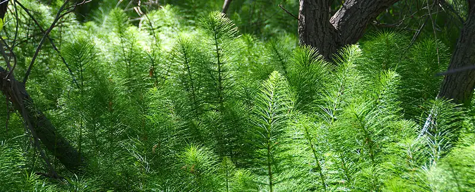
An incredible variety of seedless plants populates the terrestrial landscape. Mosses may grow on a tree trunk, and horsetails may display their jointed stems and spindly leaves across the forest floor. Today, seedless plants represent only a small fraction of the plants in our environment; yet, 300 million years ago, seedless plants dominated the landscape and grew in the enormous swampy forests of the Carboniferous period. Their decomposition created large deposits of coal that we mine today.
Current evolutionary thought holds that all plants—some green algae as well as land plants—are monophyletic; that is, they are descendants of a single common ancestor. The evolutionary transition from water to land imposed severe constraints on plants. They had to develop strategies to avoid drying out, to disperse reproductive cells in air, for structural support, and for capturing and filtering sunlight. While seed plants have developed adaptations that allow them to populate even the most arid habitats on Earth, full independence from water did not happen in all plants. Most seedless plants still require a moist environment for reproduction.
25.1 Early Plant Life¶
Learning Objectives
By the end of this section, you will be able to do the following:
- Discuss the challenges to plant life on land
- Describe the adaptations that allowed plants to colonize the land
- Describe the timeline of plant evolution and the impact of land plants on other living things
The kingdom Plantae constitutes large and varied groups of organisms. There are more than 300,000 species of catalogued plants. Of these, more than 260,000 are seed plants. Mosses, ferns, conifers, and flowering plants are all members of the plant kingdom. Land plants arose within the Archaeplastida, which includes the red algae (Rhodophyta) and two groups of green algae, Chlorophyta and Charaphyta. Most biologists also consider at least some green algae to be plants, although others exclude all algae from the plant kingdom. The reason for this disagreement stems from the fact that only green algae, the Chlorophytes and Charophytes, share common characteristics with land plants (such as using chlorophyll a and b plus carotene in the same proportion as plants). These characteristics are absent from other types of algae.
Evolution Connection: Algae and Evolutionary Paths to Photosynthesis
Some scientists consider all algae to be plants, while others assert that only the green algae belong in the kingdom Plantae. Still others include only the Charophytes among the plants. These divergent opinions are related to the different evolutionary paths to photosynthesis selected for in different types of algae. While all algae are photosynthetic—that is, they contain some form of a chloroplast—they didn’t all become photosynthetic via the same path.
The ancestors to the Archaeplastida became photosynthetic by forming an endosymbiotic relationship with a green, photosynthetic bacterium about 1.65 billion years ago. That algal line evolved into the red and green algae, and eventually into the modern mosses, ferns, gymnosperms, and angiosperms. Their evolutionary trajectory was relatively straight and monophyletic. In contrast, algae outside of the Archaeplastida, e.g., the brown and golden algae of the stramenopiles, and so on—all became photosynthetic by secondary, or even tertiary, endosymbiotic events; that is, they engulfed cells that already contained an endosymbiotic cyanobacterium. These latecomers to photosynthesis are parallels to the Archaeplastida in terms of autotrophy, but they did not expand to the same extent as the Archaeplastida, nor did they colonize the land.
Scientists who solely track evolutionary straight lines (that is, monophyly), consider only the Charophytes as plants. The common ancestor of Charophytes and land plants excludes the other members of the Archaeplastida. Charophytes also share other features with the land plants. These will be discussed in more detail in another section.
Interactive
Go to this article to get a more in-depth view of the Charophytes.
Plant Adaptations to Life on Land¶
As organisms adapted to life on land, they had to contend with several challenges in the terrestrial environment. Water has been described as “the stuff of life.” The cell’s interior is a thick soup: in this medium, most small molecules dissolve and diffuse, and the majority of the chemical reactions of metabolism take place. Desiccation, or drying out, is a constant danger for an organism exposed to air. Even when parts of a plant are close to a source of water, the aerial structures are likely to dry out. Water also provides buoyancy to organisms. On land, plants need to develop structural support in a medium that does not give the same lift as water. The organism is also subject to bombardment by mutagenic radiation, because air does not filter out ultraviolet rays of sunlight. Additionally, the male gametes must reach the female gametes using new strategies, because swimming is no longer possible. Therefore, both gametes and zygotes must be protected from desiccation. The successful land plants developed strategies to deal with all of these challenges. Not all adaptations appeared at once. Some species never moved very far from the aquatic environment, whereas others went on to conquer the driest environments on Earth.
To balance these survival challenges, life on land offers several advantages. First, sunlight is abundant. Water acts as a filter, altering the spectral quality of light absorbed by the photosynthetic pigment chlorophyll. Second, carbon dioxide is more readily available in air than in water, since it diffuses faster in air. Third, land plants evolved before land animals; therefore, until dry land was colonized by animals, no predators threatened plant life. This situation changed as animals emerged from the water and fed on the abundant sources of nutrients in the established flora. In turn, plants developed strategies to deter predation: from spines and thorns to toxic chemicals.
Early land plants, like the early land animals, did not live very far from an abundant source of water and developed survival strategies to combat dryness. One of these strategies is called tolerance. Many mosses, for example, can dry out to a brown and brittle mat, but as soon as rain or a flood makes water available, mosses will absorb it and are restored to their healthy green appearance. Another strategy is to colonize environments with high humidity, where droughts are uncommon. Ferns, which are considered an early lineage of plants, thrive in damp and cool places such as the understory of temperate forests. Later, plants moved away from moist or aquatic environments using resistance to desiccation, rather than tolerance. These plants, like cacti, minimize the loss of water to such an extent they can survive in extremely dry environments.
The most successful adaptation solution was the development of new structures that gave plants the advantage when colonizing new and dry environments. Four major adaptations contribute to the success of terrestrial plants. The first adaptation is that the life cycle in all land plants exhibits the alternation of generations, a sporophyte in which the spores are formed and a gametophyte that produces gametes. Second is an apical meristem tissue in roots and shoots. Third is the evolution of a waxy cuticle to resist desiccation (absent from some mosses). Finally cell walls with lignin to support structures off the ground. These adaptations all contribute to the success of the land plants, but are noticeably lacking in the closely related green algae—another reason for the debate over their placement in the plant kingdom. They are also not all found in the mosses, which can be regarded as representing an intermediate stage in adaptation to land.
Alternation of Generations¶
All sexually reproducing organisms have both haploid and diploid cells in their life cycles. In organisms with haplontic life cycles, the haploid stage is dominant, while in organisms with a diplontic life cycle, the diploid stage is the dominant life stage. Dominant in this context means both the stage in which the organism spends most of its time, and the stage in which most mitotic cell reproduction occurs—the multicellular stage. In haplontic life cycles, the only diploid cell is the zygote, which undergoes immediate meiosis to restore the haploid state. In diplontic life cycles, the only haploid cells are the gametes, which combine to restore the diploid state at their earliest convenience. Humans, for example, are diplontic.
Alternation of generations describes a life cycle in which an organism has both haploid and diploid multicellular stages (Figure 25.2). This type of life cycle, which is found in all plants, is described as haplodiplontic.
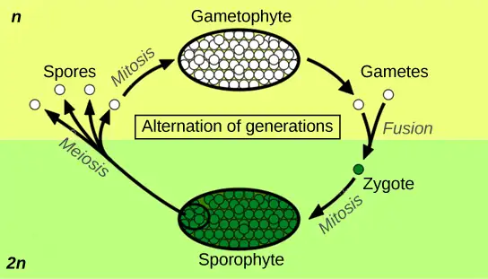
In alternation of generations, the multicellular haploid form, known as a gametophyte, is followed in the developmental sequence by a multicellular diploid form, the sporophyte. The gametophyte gives rise to the gametes (reproductive cells) by mitosis. This can be the most obvious phase of the life cycle of the plant, as in the mosses, or it can occur in a microscopic structure, such as a pollen grain, in the seed plants. The evolution of the land plants is marked by increasing prominence of the sporophyte generation. The sporophyte stage is barely noticeable in non-vascular plants (the collective term for the plants that include the liverworts and mosses). In the seed plants, the sporophyte phase can be a towering tree, as in sequoias and pines.
Protection of the embryo is a major requirement for land plants. The vulnerable embryo must be sheltered from desiccation and other environmental hazards. In both seedless and seed plants, the female gametophyte provides protection and nutrients to the embryo as it develops into the new sporophyte. This distinguishing feature of land plants gave the group its alternate name of embryophytes.
Sporangia in Seedless Plants¶
The sporophyte of seedless plants is diploid and results from syngamy (fusion) of two gametes. The sporophyte bears the sporangia (singular, sporangium). The term “sporangia” literally means “a vessel for spores,” as it is a reproductive sac in which spores are formed (Figure 25.3). Inside the multicellular sporangia, the diploid sporocytes, or mother cells, produce haploid spores by meiosis, during which the 2n chromosome number is reduced to 1n (note that in many plants, chromosome number is complicated by polyploidy: for example, durum wheat is tetraploid, bread wheat is hexaploid, and some ferns are 1000-ploid). The spores are later released by the sporangia and disperse in the environment. When the haploid spore germinates in a hospitable environment, it generates a multicellular gametophyte by mitosis. The gametophyte supports the zygote formed from the fusion of gametes and the resulting young sporophyte (vegetative form). The cycle then begins anew.
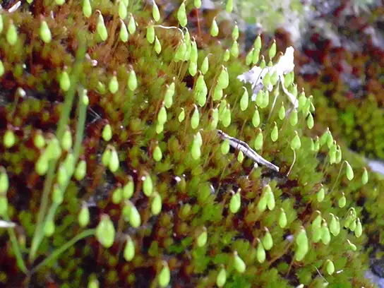
Plants that produce only one type of spore are called homosporous and the resultant gametophyte produces both male and female gametes, usually on the same individual. Non-vascular plants are homosporous, and the gametophyte is the dominant generation in the life cycle. Plants that produce two types of spores are called heterosporous. The male spores are called microspores, because of their smaller size, and develop into the male gametophyte; the comparatively larger megaspores develop into the female gametophyte. A few seedless vascular plants and all seed plants are heterosporous, and the sporophyte is the dominant generation.
The spores of seedless plants are surrounded by thick cell walls containing a tough polymer known as sporopollenin. As the name suggests, it is also found in the walls of pollen grains. This complex substance is characterized by long chains of organic molecules related to fatty acids and carotenoids: hence the yellow color of most pollen. Sporopollenin is unusually resistant to chemical and biological degradation. In seed plants, in which pollen is the male gametophyte, the toughness of sporopollenin explains the existence of well-preserved pollen fossils. Sporopollenin was once thought to be an innovation of land plants; however, the charophyte Coleochaetes also forms spores that contain sporopollenin.
Gametangia in Seedless Plants¶
Gametangia (singular, gametangium) are structures observed on multicellular haploid gametophytes. In the gametangia, precursor cells give rise to gametes by mitosis. The male gametangium (antheridium) releases sperm. Seedless plants produce sperm equipped with flagella that enable them to swim in a moist environment to the archegonium: the female gametangium. The embryo develops inside the archegonium as the sporophyte. Gametangia are prominent in seedless plants, but are absent or rudimentary in seed plants.
Apical Meristems¶
Shoots and roots of plants increase in length through rapid cell division in a tissue called the apical meristem, which is a small mitotically active zone of cells found at the shoot tip or root tip (Figure 25.4). The apical meristem is made of undifferentiated cells that continue to proliferate throughout the life of the plant. Meristematic cells give rise to all the specialized tissues of the organism. Elongation of the shoots and roots allows a plant to access additional space and resources: light in the case of the shoot, and water and minerals in the case of roots. A separate meristem, called the lateral meristem, produces cells that increase the diameter of tree trunks.
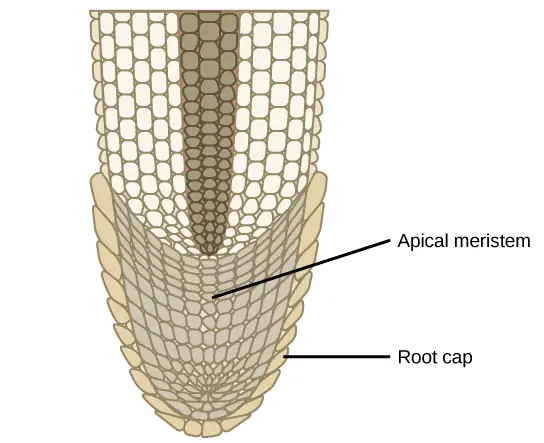
Additional Land Plant Adaptations¶
As plants adapted to dry land and became independent from the constant presence of water in damp habitats, new organs and structures made their appearance. Early land plants did not grow more than a few inches off the ground, competing for light on these low mats. By developing a shoot and growing taller, individual plants captured more light. Because air offers substantially less support than water, land plants incorporated more rigid molecules in their stems (and later, tree trunks). In small plants such as single-celled algae, simple diffusion suffices to distribute water and nutrients throughout the organism. However, for plants to evolve larger forms, the evolution of a conductive tissue for the distribution of water and solutes was a prerequisite. The evolution of vascular tissue in plants met both of these needs. The vascular system contains two types of conductive tissue: xylem and phloem. Xylem conducts water and minerals absorbed from the soil up to the shoot, while phloem transports food derived from photosynthesis throughout the entire plant. In xylem, the cells walls are reinforced with lignin, whose tough hydrophobic polymers help prevent the seepage of water across the xylem cell walls. Lignin also adds to the strength of these tissues in supporting the plant. The vascular tissues extend into the root of land plants. The root system evolved to take up water and minerals from the soil, and to anchor the increasingly taller shoot in the soil.
In land plants, a waxy, waterproof cover called a cuticle protects the leaves and stems from desiccation. However, the cuticle also prevents intake of carbon dioxide needed for the synthesis of carbohydrates through photosynthesis. To overcome this, stomata or pores that open and close to regulate traffic of gases and water vapor appeared in plants as they moved away from moist environments into drier habitats.
Water filters ultraviolet-B (UVB) light, which is harmful to all organisms, especially those that must absorb light to survive. This filtering does not occur for land plants. Exposure to damaging radiation presented an additional challenge to land colonization, which was met by the evolution of biosynthetic pathways for the synthesis of protective flavonoids and other pigments that absorb UV wavelengths of light and protect the aerial parts of plants from photodynamic damage.
Plants cannot avoid being eaten by animals. Instead, they synthesize a large range of poisonous secondary metabolites: complex organic molecules such as alkaloids, whose noxious smells and unpleasant taste deter animals. These toxic compounds can also cause severe diseases and even death, thus discouraging predation. Humans have used many of these compounds for centuries as drugs, medications, or spices. In contrast, as plants co-evolved with animals, the development of sweet and nutritious metabolites lured animals into providing valuable assistance in dispersing pollen grains, fruit, or seeds. Plants have been enlisting animals to be their helpers in this way for hundreds of millions of years.
Evolution of Land Plants¶
No discussion of the evolution of plants on land can be undertaken without a brief review of the timeline of the geological eras. The early era, known as the Paleozoic, is divided into six periods. It starts with the Cambrian period, followed by the Ordovician, Silurian, Devonian, Carboniferous, and Permian. The major event to mark the Ordovician, more than 500 million years ago, was the colonization of land by the ancestors of modern land plants. Fossilized cells, cuticles, and spores of early land plants have been dated as far back as the Ordovician period in the early Paleozoic era. The oldest-known vascular plants have been identified in deposits from the late Silurian and early Devonian. One of the richest sources of information is the Rhynie chert, a sedimentary rock deposit found in Rhynie, Scotland (Figure 25.5), where embedded fossils of some of the earliest vascular plants have been identified.
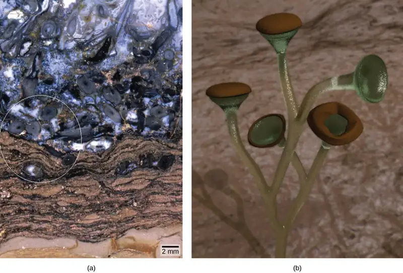
Paleobotanists distinguish between extinct species, as fossils, and extant species, which are still living. These extinct vascular plants most probably lacked true leaves and roots and formed low vegetation mats similar in size to modern-day mosses, although some could reach one meter in height. The later genus Cooksonia, which flourished during the Silurian, has been extensively studied from well-preserved examples. Imprints of Cooksonia show slender branching stems ending in what appear to be sporangia. From the recovered specimens, it is not possible to establish for certain whether Cooksonia possessed vascular tissues. Fossils indicate that by the end of the Devonian period, ferns, horsetails, and seed plants populated the landscape, giving rising to trees and forests. This luxuriant vegetation helped enrich the atmosphere with oxygen, making it easier for air-breathing animals to colonize dry land. Plants also established early symbiotic relationships with fungi, creating mycorrhizae: a relationship in which the fungal network of filaments increases the efficiency of the plant root system, and the plants provide the fungi with byproducts of photosynthesis.
Career Connection: Paleobotanist
How organisms acquired traits that allow them to colonize new environments—and how the contemporary ecosystem is shaped—are fundamental questions of evolution. Paleobotany (the study of extinct plants) addresses these questions through the analysis of fossilized specimens retrieved from field studies, reconstituting the morphology of organisms that disappeared long ago. Paleobotanists trace the evolution of plants by following the modifications in plant morphology: shedding light on the connection between existing plants by identifying common ancestors that display the same traits. This field seeks to find transitional species that bridge gaps in the path to the development of modern organisms. Fossils are formed when organisms are trapped in sediments or environments where their shapes are preserved. Paleobotanists collect fossil specimens in the field and place them in the context of the geological sediments and other fossilized organisms surrounding them. The activity requires great care to preserve the integrity of the delicate fossils and the layers of rock in which they are found.
One of the most exciting recent developments in paleobotany is the use of analytical chemistry and molecular biology to study fossils. Preservation of molecular structures requires an environment free of oxygen, since oxidation and degradation of material through the activity of microorganisms depend on its presence. One example of the use of analytical chemistry and molecular biology is the identification of oleanane, a compound that deters pests. Up to this point, oleanane appeared to be unique to flowering plants; however, it has now been recovered from sediments dating from the Permian, much earlier than the current dates given for the appearance of the first flowering plants. Paleobotanists can also study fossil DNA, which can yield a large amount of information, by analyzing and comparing the DNA sequences of extinct plants with those of living and related organisms. Through this analysis, evolutionary relationships can be built for plant lineages.
Some paleobotanists are skeptical of the conclusions drawn from the analysis of molecular fossils. For example, the chemical materials of interest degrade rapidly when exposed to air during their initial isolation, as well as in further manipulations. There is always a high risk of contaminating the specimens with extraneous material, mostly from microorganisms. Nevertheless, as technology is refined, the analysis of DNA from fossilized plants will provide invaluable information on the evolution of plants and their adaptation to an ever-changing environment.
The Major Divisions of Land Plants¶
The green algae and land plants are grouped together into a subphylum called the Streptophyta, and thus are called Streptophytes. In a further division, land plants are classified into two major groups according to the absence or presence of vascular tissue, as detailed in Figure 25.6. Plants that lack vascular tissue, which is formed of specialized cells for the transport of water and nutrients, are referred to as non-vascular plants. Liverworts, mosses, and hornworts are seedless, non-vascular plants that likely appeared early in land plant evolution. Vascular plants developed a network of cells that conduct water and solutes. The first vascular plants appeared in the late Ordovician (500 to 435 MYA) and were probably similar to lycophytes, which include club mosses (not to be confused with the mosses) and the monilophytes (ferns, horsetails, and whisk ferns). Lycophytes and monilophytes are referred to as seedless vascular plants, because they do not produce seeds. The seed plants, or spermatophytes, form the largest group of all existing plants, and hence dominate the landscape. Seed plants include gymnosperms, most notably conifers, which produce “naked seeds,” and the most successful of all plants, the flowering plants (angiosperms). Angiosperms protect their seeds inside chambers at the center of a flower; the walls of the chamber later develop into a fruit.
Visual Connection
![Table shows the division of Streptophytes: the green plants. This group includes Charophytes and Embryophytes. Embryophytes are land plants, which are subdivided into vascular and nonvascular plants. Nonvascular plants are all seedless, and are in the Bryophyte group, which is subdivided into liverworts, hornworts, and mosses. Vascular plants are divided into seedless and seed plants. Seedless plants are subdivided into Lycophytes, which include club mosses, quillworts, and spike mosses, and monilophytes, which include whisk ferns, horsetails, and ferns. Seed plants are in the Spermatophyte group and consist of gymnosperms and angiosperms.](img/figure-25-01-05.webp)
Which of the following statements about plant divisions is false?
- Lycophytes and monilophytes are seedless vascular plants.
- All vascular plants produce seeds.
- All non-vascular embryophytes are bryophytes.
- Seed plants include angiosperms and gymnosperms.
25.2 Green Algae: Precursors of Land Plants¶
Learning Objectives
By the end of this section, you will be able to do the following:
- Describe the traits shared by green algae and land plants
- Explain why charophytes are considered the closest algal relative to land plants
- Explain how current phylogenetic relationships are reshaped by comparative analysis of DNA sequences
Streptophytes¶
Until recently, all photosynthetic eukaryotes were classified as members of the kingdom Plantae. The brown and golden algae, however, are now reassigned to the protist supergroup Chromalveolata. This is because apart from their ability to capture light energy and fix CO2, they lack many structural and biochemical traits that are characteristic of plants. The plants are now classified, along with the red and green algae, in the protist supergroup Archaeplastida. Green algae contain the same carotenoids and chlorophyll a and b as land plants, whereas other algae have different accessory pigments and types of chlorophyll molecules in addition to chlorophyll a. Both green algae and land plants also store carbohydrates as starch. Their cells contain chloroplasts that display a dizzying variety of shapes, and their cell walls contain cellulose, as do land plants. Which of the green algae to include among the plants has not been phylogenetically resolved.
Green algae fall into two major groups, the chlorophytes and the charophytes. The chlorophytes include the genera Chlorella, Chlamydomonas, the sea lettuce Ulva, and the colonial alga Volvox. The charophytes include desmids, as well as the genera Spirogyra, Coleochaete, and Chara. There are familiar green algae in both groups. Some green algae are single cells, such as Chlamydomonas and desmids, which adds to the ambiguity of green algae classification, because plants are multicellular. Other green algae, like Volvox, form colonies, and some, like Ulva are multicellular (Figure 25.7). Spirogyra is a long filament of colonial cells. Most members of this genus live in fresh water, brackish water, seawater, or even in snow patches. A few green algae can survive on soil, provided it is covered by a thin film of moisture within which they can live. Periodic dry spells provide a selective advantage to algae that can survive water stress.
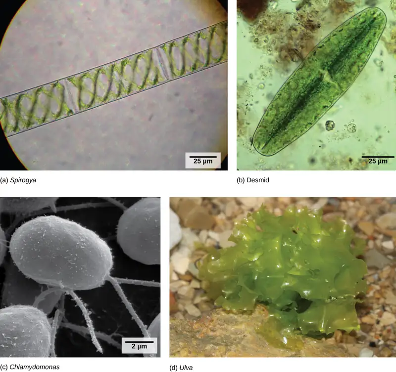
The chlorophytes and the charophytes differ in a few respects that, in addition to molecular analysis, place the land plants as a sister group of the charophytes. First, cells in charophytes and the land plants divide along cell plates called phragmoplasts, in which microtubules parallel to the spindle serve as guides for the vesicles of the forming cell plate. In the chlorophytes, the cell plate is organized by a phycoplast, in which the microtubules are perpendicular to the spindle. Second, only the charophytes and the land plants have plasmodesmata, or intercellular channels that allow the transfer of materials from cell to cell. In the chlorophytes, intercellular connections do not persist in mature multicellular forms. Finally, both charophytes and the land plants show apical growth—growth from the tips of the plant rather than throughout the plant body. Consequently, land plants and the charophytes are now part of a new monophyletic group called Streptophyta.
Reproduction of Green Algae¶
Green algae reproduce both asexually, by fragmentation or dispersal of spores, or sexually, by producing gametes that fuse during fertilization. In a single-celled organism such as Chlamydomonas, there is no mitosis after fertilization. In the multicellular Ulva, a sporophyte grows by mitosis after fertilization (and thus exhibits alternation of generations). Both Chlamydomonas and Ulva produce flagellated gametes.
Charophytes¶
The charophytes include several different algal orders that have each been suggested to be the closest relatives of the land plants: the Charales, the Zygnematales, and the Coleochaetales. The Charales can be traced back 420 million years. They live in a range of freshwater habitats and vary in size from a few millimeters to a meter in length. The representative genus is Chara (Figure 25.8), often called muskgrass or skunkweed because of its unpleasant smell. Large cells form the thallus: the main stem of the alga. Branches arising from the nodes are made of smaller cells. Male and female reproductive structures are found on the nodes, and the sperm have flagella. Although Chara looks superficially like some land plants, a major difference is that the stem has no supportive tissue. However, the Charales exhibit a number of traits that are significant for adaptation to land life. They produce the compounds lignin and sporopollenin, and form plasmodesmata that connect the cytoplasm of adjacent cells. Although the life cycle of the Charales is haplontic (the main form is haploid, and diploid zygotes are formed but have a brief existence), the egg, and later, the zygote, form in a protected chamber on the haploid parent plant.
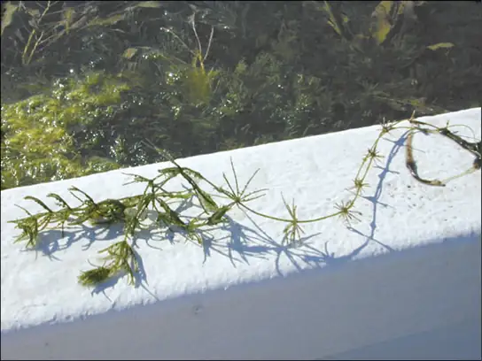
The Coleochaetes are branched or disclike multicellular forms. They can produce both sexually and asexually, but the life cycle is basically haplontic. Recent extensive DNA sequence analysis of charophytes indicates that the Zygnematales are more closely related to the embryophytes than the Charales or the Coleochaetales. The Zygnematales include the familiar genus Spirogyra, as well as the desmids. As techniques in DNA analysis improve and new information on comparative genomics arises, the phylogenetic connections between the charophytes and the land plants will continued to be examined to produce a satisfactory solution to the mystery of the origin of land plants.
25.3 Bryophytes¶
Learning Objectives
By the end of this section, you will be able to do the following:
- Identify the main characteristics of bryophytes
- Describe the distinguishing traits of liverworts, hornworts, and mosses
- Chart the development of land adaptations in the bryophytes
- Describe the events in the bryophyte lifecycle
Bryophytes are the closest extant relatives of early terrestrial plants. The first bryophytes (liverworts) most likely appeared in the Ordovician period, about 450 million years ago. Because they lack lignin and other resistant structures, the likelihood of bryophytes forming fossils is rather small. Some spores protected by sporopollenin have survived and are attributed to early bryophytes. By the Silurian period (435 MYA), however, vascular plants had spread through the continents. This compelling fact is used as evidence that non-vascular plants must have preceded the Silurian period.
More than 25,000 species of bryophytes thrive in mostly damp habitats, although some live in deserts. They constitute the major flora of inhospitable environments like the tundra, where their small size and tolerance to desiccation offer distinct advantages. They generally lack lignin and do not have actual tracheids (xylem cells specialized for water conduction). Rather, water and nutrients circulate inside specialized conducting cells. Although the term non-tracheophyte is more accurate, bryophytes are commonly called non-vascular plants.
In a bryophyte, all the conspicuous vegetative organs—including the photosynthetic leaf-like structures, the thallus (“plant body”), stem, and the rhizoid that anchors the plant to its substrate—belong to the haploid organism or gametophyte. The male gametes formed by bryophytes swim with a flagellum, so fertilization is dependent on the presence of water. The bryophyte embryo also remains attached to the parent plant, which protects and nourishes it. The sporophyte that develops from the embryo is barely noticeable. The sporangium—the multicellular sexual reproductive structure in which meiosis produces haploid spores—is present in bryophytes and absent in the majority of algae. This is also a characteristic of land plants.
The bryophytes are divided into three phyla: the liverworts or Marchantiophyta, the hornworts or Anthocerotophyta, and the mosses or true Bryophyta.
Liverworts¶
Liverworts (Marchantiophyta) are currently classified as the plants most closely related to the ancestor of vascular plants that adapted to terrestrial environments. In fact, liverworts have colonized every terrestrial habitat on Earth and diversified to more than 7000 existing species (Figure 25.9). Lobate liverworts form a flat thallus, with lobes that have a vague resemblance to the lobes of the liver (Figure 25.10), which accounts for the name given to the phylum. Leafy liverworts have tiny leaflike structures attached to a stalk. Several leafy liverworts are shown in Figure 25.9.
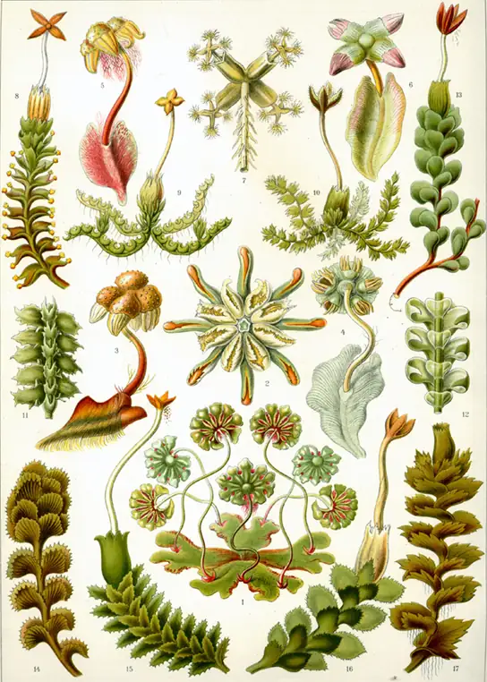
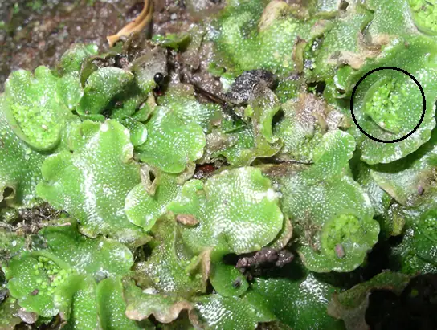
Openings in the thallus that allow the movement of gases may be observed in liverworts (Figure 25.10). However, these are not stomata, because they do not actively open and close by the action of guard cells. Instead, the thallus takes up water over its entire surface and has no cuticle to prevent desiccation, which explains their preferred wet habitats. Figure 25.11 represents the lifecycle of a lobate liverwort. Haploid spores germinate into flattened thalli attached to the substrate by thin, single-celled filaments. Stalk-like structures (gametophores) grow from the thallus and carry male and female gametangia, which may develop on separate, individual plants, or on the same plant, depending on the species. Flagellated male gametes develop within antheridia (male gametangia). The female gametes develop within archegonia (female gametangia). Once released, the male gametes swim with the aid of their flagella to an archegonium, and fertilization ensues. The zygote grows into a small sporophyte still contained in the archegonium. The diploid zygote will give rise, by meiosis, to the next generation of haploid spores, which can be disseminated by wind or water. In many liverworts, spore dispersal is facilitated by elaters—long single cells that suddenly change shape as they dry out and throw adjacent spores out of the spore capsule. Liverwort plants can also reproduce asexually, by the breaking of “branches” or the spreading of leaf fragments called gemmae. In this latter type of reproduction, the gemmae—small, intact, complete pieces of plant that are produced in a cup on the surface of the thallus (shown in Figure 25.11 and Figure 25.12)—are splashed out of the cup by raindrops. The gemmae then land nearby and develop into gametophytes.
![The liverwort has a flat, leaf-like structure called a thallus, which is haploid (1n). Root-like rhizoids grow from the bottom of the thallus. Gemma cups used for asexual reproduction grow on top of the thallus. A slender stalk extends from the thallus, and a haploid (1n) archegonial head sits at its top. The archegonial head is the female gametophyte. The archegonial head has fronds, like a palm tree. The underside of the archegonial head contains protrusions called archegonia, which house the eggs. Another stalk extends from another thallus, and a haploid (1n) antheridial head sits at its top. The antheridial head is the male gametophyte. The outside of the antheridial head has antheridia which release sperm. The haploid (1n) sperm swim through a hole in the bottom of the archegonium and fertilize the haploid (1n) egg to produce a diploid (2n) embryo. The embryo grows into a stalk called a seta. Meiosis produces haploid (1n) spores in a sac at the tip of the stalk. The sac bursts open, releasing the spores. The spores sprout, producing a new thallus and rhizoids.](img/figure-b25-03-03.webp)
Hornworts¶
The defining characteristic of the hornworts (Anthocerotophyta) is the narrow, pipe-like sporophyte. Hornworts have colonized a variety of habitats on land, although they are never far from a source of moisture. The short, blue-green gametophyte is the dominant phase of the life cycle of a hornwort. The sporophytes emerge from the parent gametophyte and continue to grow throughout the life of the plant (Figure 25.12).
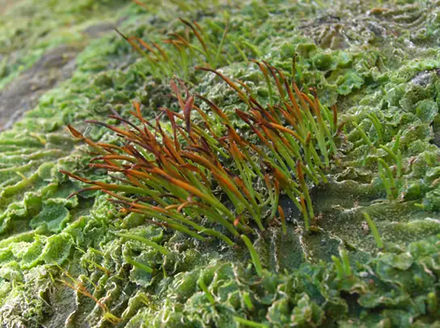
Stomata (air pores that can be opened and closed) appear in the hornworts and are abundant on the sporophyte. Photosynthetic cells in the thallus each contain a single chloroplast. Meristem cells at the base of the plant keep dividing and adding to the height of the sporophyte. This growth pattern is unique to the hornworts. Many hornworts establish symbiotic relationships with cyanobacteria that fix nitrogen from the environment.
The lifecycle of hornworts (Figure 25.13) follows the general pattern of alternation of generations. The gametophytes grow as flat thalli on the soil with embedded male and female gametangia. Flagellated sperm swim to the archegonia and fertilize eggs. The zygote develops into a long and slender sporophyte that eventually splits open down the side, releasing spores. Thin branched cells called pseudoelaters surround the spores and help propel them farther in the environment. The haploid spores germinate and give rise to the next generation of gametophytes.
![In hornworts, the gametophyte is a haploid 1 n leaf-like structure with slender stalks called rhizoids underneath. Male sex organs called antheridia produce sperm, and female sex organs called archegonia produce eggs. Both male and female sex organs form just beneath the surface of the gametophyte, and are exposed to the surface as the organs mature. The sperm swims to the egg or is propelled by water. When the egg is fertilized, the embryo grows into a hollow tube-like structure called a sporophyte. Meiosis inside the sporophyte produces haploid 1 n spores. The spores are ejected from the top of the tube. They grow into new gametophytes, completing the cycle.](img/figure-25-03-05.webp)
Mosses¶
The mosses are the most numerous of the non-vascular plants. More than 10,000 species of mosses have been catalogued. Their habitats vary from the tundra, where they are the main vegetation, to the understory of tropical forests. In the tundra, the mosses’ shallow rhizoids allow them to fasten to a substrate without penetrating the frozen soil. Mosses slow down erosion, store moisture and soil nutrients, and provide shelter for small animals as well as food for larger herbivores, such as the musk ox. Mosses are very sensitive to air pollution and are used to monitor air quality. They are also sensitive to copper salts, so these salts are a common ingredient of compounds marketed to eliminate mosses from lawns.
Mosses form diminutive gametophytes, which are the dominant phase of the lifecycle. Green, flat structures with a simple midrib—resembling true leaves, but lacking stomata and vascular tissue—are attached in a spiral to a central stalk. Mosses have stomata only on the sporophyte. Water and nutrients are absorbed directly through the leaflike structures of the gametophyte. Some mosses have small branches. A primitive conductive system that carries water and nutrients runs up the gametophyte's stalk, but does not extend into the leaves. Additionally, mosses are anchored to the substrate—whether it is soil, rock, or roof tiles—by multicellular rhizoids, precursors of roots. They originate from the base of the gametophyte, but are not the major route for the absorption of water and minerals. The lack of a true root system explains why it is so easy to rip moss mats from a tree trunk. The mosses therefore occupy a threshold position between other bryophytes and the vascular plants.
The moss lifecycle follows the pattern of alternation of generations as shown in Figure 25.14. The most familiar structure is the haploid gametophyte, which germinates from a haploid spore and forms first a protonema—usually, a tangle of single-celled filaments that hug the ground. Cells akin to an apical meristem actively divide and give rise to a gametophore, consisting of a photosynthetic stem and foliage-like structures. Male and female gametangia develop at the tip of separate gametophores. The antheridia (male organs) produce many sperm, whereas the archegonia (the female organs) each form a single egg at the base (venter) of a flask-shaped structure. The archegonium produces attractant substances and at fertilization, the sperm swims down the neck to the venter and unites with the egg inside the archegonium. The zygote, protected by the archegonium, divides and grows into a sporophyte, still attached by its foot to the gametophyte.
Visual Connection
![In mosses, the mature haploid (1n) gametophyte is a slender, nonvascular stem with fuzzy, non-vascular leaves. Root-like rhizoids grow from the bottom. Male antheridia and female archegonia grow at the tip of the stem. Sperm fertilize the eggs, producing a diploid (2n) zygote inside a vase-like structure called a venter inside the archegonial head. The embryo grows into a sporophyte that projects like a flower from the vase. The sporophyte undergoes meiosis to produce haploid (1n) spores that grow to produce mature gametophytes, completing the cycle.](img/figure-b25-03-06.webp)
Which of the following statements about the moss life cycle is false?
- The mature gametophyte is haploid.
- The sporophyte produces haploid spores.
- The calyptra buds to form a mature gametophyte.
- The zygote is housed in the venter.
The moss sporophyte is dependent on the gametophyte for nutrients. The slender seta (plural, setae), as seen in Figure 25.15, contains tubular cells that transfer nutrients from the base of the sporophyte (the foot) to the sporangium or capsule.
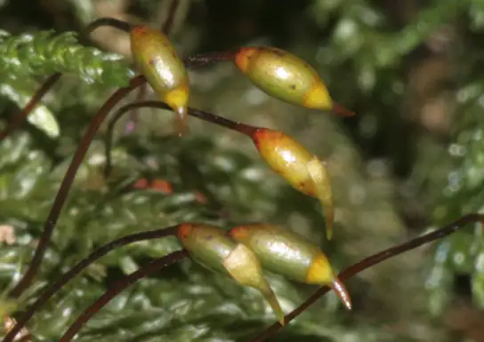
Spore mother cells in the sporangium undergo meiosis to produce haploid spores. The sporophyte has several features that protect the developing spores and aid in their dispersal. The calyptra, derived from the walls of the archegonium, covers the sporangium. A structure called the operculum is at the tip of the spore capsule. The calyptra and operculum fall off when the spores are ready for dispersal. The peristome, tissue around the mouth of the capsule, is made of triangular, close-fitting units like little “teeth.” The peristome opens and closes, depending on moisture levels, and periodically releases spores.
25.4 Seedless Vascular Plants¶
Learning Objectives
By the end of this section, you will be able to do the following:
- Identify the new traits that first appear in seedless tracheophytes
- Discuss how each trait is important for adaptation to life on land
- Identify the classes of seedless tracheophytes
- Describe the life cycle of a fern
- Explain the role of seedless plants in the ecosystem
The vascular plants, or tracheophytes, are the dominant and most conspicuous group of land plants. More than 260,000 species of tracheophytes represent more than 90 percent of Earth’s vegetation. Several evolutionary innovations explain their success and their ability to spread to all habitats.
Bryophytes may have been successful at the transition from an aquatic habitat to land, but they are still dependent on water for reproduction, and must absorb moisture and nutrients through the gametophyte surface. The lack of roots for absorbing water and minerals from the soil, as well as a lack of lignin-reinforced conducting cells, limit bryophytes to small sizes. Although they may survive in reasonably dry conditions, they cannot reproduce and expand their habitat range in the absence of water. Vascular plants, on the other hand, can achieve enormous heights, thus competing successfully for light. Photosynthetic organs become leaves, and pipe-like cells or vascular tissues transport water, minerals, and fixed carbon organic compounds throughout the organism.
Throughout plant evolution, there is a progressive increase in the dominance of the sporophyte generation. In seedless vascular plants, the diploid sporophyte is the dominant phase of the life cycle. The gametophyte is now less conspicuous, but still independent of the sporophyte. Seedless vascular plants still depend on water during fertilization, as the flagellated sperm must swim on a layer of moisture to reach the egg. This step in reproduction explains why ferns and their relatives are more abundant in damp environments.
Vascular Tissue: Xylem and Phloem¶
The first plant fossils that show the presence of vascular tissue date to the Silurian period, about 430 million years ago. The simplest arrangement of conductive cells shows a pattern of xylem at the center surrounded by phloem. Xylem is the tissue responsible for the storage and long-distance transport of water and nutrients, as well as the transfer of water-soluble growth factors from the organs of synthesis to the target organs. The tissue consists of conducting cells, known as tracheids, and supportive filler tissue, called parenchyma. Xylem conductive cells incorporate the compound lignin into their walls, and are thus described as lignified. Lignin itself is a complex polymer: It is impermeable to water and confers mechanical strength on vascular tissue. With their rigid cell walls, the xylem cells provide support to the plant and allow it to achieve impressive heights. Tall plants have a selective advantage by being able to reach unfiltered sunlight and disperse their spores or seeds away from the parent plant, thus expanding the species’ range. By growing higher than other plants, tall trees cast their shadows on shorter plants and thereby outcompete them for water and precious nutrients in the soil.
Phloem is the second type of vascular tissue; it transports sugars, proteins, and other solutes throughout the plant. Phloem cells are divided into sieve elements (conducting cells) and cells that support the sieve elements. Together, xylem and phloem tissues form the vascular system of plants (Figure 25.16).
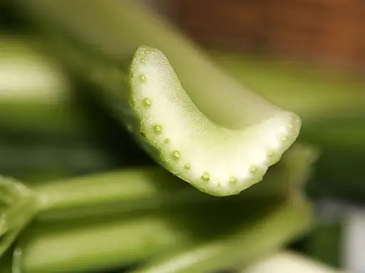
Roots: Support for the Plant¶
Roots are not well-preserved in the fossil record. Nevertheless, it seems that roots appeared later in evolution than vascular tissue. The development of an extensive network of roots represented a significant new feature of vascular plants. Thin rhizoids attached bryophytes to the substrate, but these rather flimsy filaments did not provide a strong anchor for the plant; nor did they absorb substantial amounts of water and nutrients. In contrast, roots, with their prominent vascular tissue system, transfer water and minerals from the soil to the rest of the plant. The extensive network of roots that penetrates deep into the soil to reach sources of water also stabilizes plants by acting as a ballast or anchor. The majority of roots establish a symbiotic relationship with fungi, forming mutualistic mycorrhizae, which benefit the plant by greatly increasing the surface area for absorption of water, soil minerals, and nutrients.
Leaves, Sporophylls, and Strobili¶
A third innovation marks the seedless vascular plants. Accompanying the prominence of the sporophyte and the development of vascular tissue, the appearance of true leaves improved their photosynthetic efficiency. Leaves capture more sunlight with their increased surface area by employing more chloroplasts to trap light energy and convert it to chemical energy, which is then used to fix atmospheric carbon dioxide into carbohydrates. The carbohydrates are exported to the rest of the plant by the conductive cells of phloem tissue.
The existence of two types of leaf morphology—microphylls and megaphylls—suggests that leaves evolved independently in several groups of plants. Microphylls ("little leaves") are small and have a simple vascular system. The first microphylls in the fossil record can be dated to 350 million years ago in the Carboniferous era. A single unbranched vein—a bundle of vascular tissue made of xylem and phloem—runs through the center of the leaf. Microphylls may have originated from the flattening of lateral branches, or from sporangia that lost their reproductive capabilities. Microphylls are seen in club mosses. Microphylls probably preceded the development of megaphylls ("big leaves"), which are larger leaves with a pattern of multiple veins. Megaphylls most likely appeared independently several times during the course of evolution. Their complex networks of veins suggest that several branches may have combined into a flattened organ, with the gaps between the branches being filled with photosynthetic tissue. Megaphylls are seen in ferns and more derived vascular plants.
In addition to photosynthesis, leaves play another role in the life of the plants. Pine cones, mature fronds of ferns, and flowers are all sporophylls—leaves that were modified structurally to bear sporangia. In conifers, the commonly named pine cones, strobili are cone-like structures that contain sporangia.
Ferns and Other Seedless Vascular Plants¶
By the late Devonian period, plants had evolved vascular tissue, well-defined leaves, and root systems. With these advantages, plants increased in height and size. During the Carboniferous period (360 to 300 MYA), swamp forests of club mosses and horsetails—some specimens reaching heights of more than 30 m (100 ft)—covered most of the land. These forests gave rise to the extensive coal deposits that gave the Carboniferous its name. In seedless vascular plants, the sporophyte became the dominant phase of the life cycle.
Water is still required as a medium of sperm transport during the fertilization of seedless vascular plants, and most favor a moist environment. Modern-day seedless tracheophytes include club mosses, horsetails, ferns, and whisk ferns.
Phylum Lycophyta: Club Mosses¶
The club mosses, or phylum Lycophyta, are the earliest group of seedless vascular plants. They dominated the landscape of the Carboniferous, growing into tall trees and forming large swamp forests. Today’s club mosses are diminutive, evergreen plants consisting of a stem (which may be branched) and microphylls (Figure 25.17). The phylum Lycophyta consists of close to 1,200 species, including the quillworts (Isoetales), the club mosses (Lycopodiales), and spike mosses (Selaginellales), none of which are true mosses or bryophytes.
Lycophytes follow the pattern of alternation of generations seen in the bryophytes, except that the sporophyte is the major stage of the life cycle. Some lycophytes, like the club moss Lycopodium, produce gametophytes that are independent of the sporophyte, developing underground or in other locations where they can form mycorrhizal associations with fungi. In many club mosses, the sporophyte gives rise to sporophylls arranged in strobili, cone-like structures that give the class its name. Sporangia develop within the chamber formed by each sporophyll.
Lycophytes can be homosporous (spores of the same size) or heterosporous (spores of different sizes). The spike moss Selaginella is a heterosporous lycophyte. The same strobilus will contain microsporangia, which produce spores that will develop into the male gametophyte, and megasporangia, which produce spores that will develop into the female gametophyte. Both gametophytes develop within the protective strobilus.
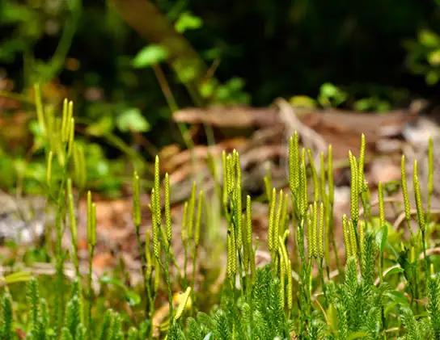
Phylum Monilophyta: Class Equisetopsida (Horsetails)¶
Horsetails, whisk ferns, and ferns belong to the phylum Monilophyta, with horsetails placed in the class Equisetopsida. The single genus Equisetum is the survivor of a large group of plants, known as Arthrophyta, which produced large trees and entire swamp forests in the Carboniferous. The plants are usually found in damp environments and marshes (Figure 25.18).
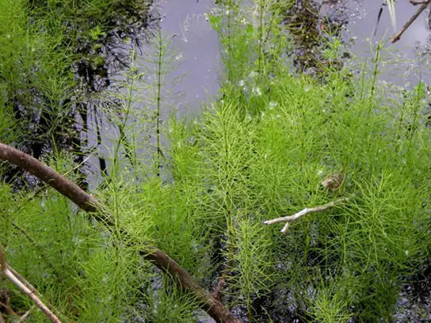
The stem of a horsetail is characterized by the presence of joints or nodes, hence the name Arthrophyta (arthro- = "joint"; -phyta = "plant"). Leaves and branches come out as whorls from the evenly spaced joints. The needle-shaped leaves do not contribute greatly to photosynthesis, the majority of which takes place in the green stem (Figure 25.19).
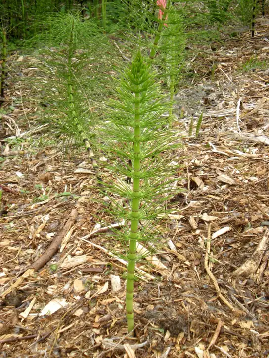
Silica collected by in the epidermal cells contributes to the stiffness of horsetail plants, but underground stems known as rhizomes anchor the plants to the ground. Modern-day horsetails are homosporous. The spores are attached to elaters—as we have seen, these are coiled threads that spring open in dry weather and casts the spores to a location distant from the parent plants. The spores then germinate to produce small bisexual gametophytes.
Phylum Monilophyta: Class Psilotopsida (Whisk Ferns)¶
While most ferns form large leaves and branching roots, the whisk ferns, class Psilotopsida, lack both roots and leaves, probably lost by reduction. Photosynthesis takes place in their green stems, which branch dichotomously. Small yellow knobs form at the tip of a branch or at branch nodes and contain the sporangia (Figure 25.20). Spores develop into gametophytes that are only a few millimeters across, but which produce both male and female gametangia. Whisk ferns were considered early pterophytes. However, recent comparative DNA analysis suggests that this group may have lost both vascular tissue and roots through evolution, and is more closely related to ferns.
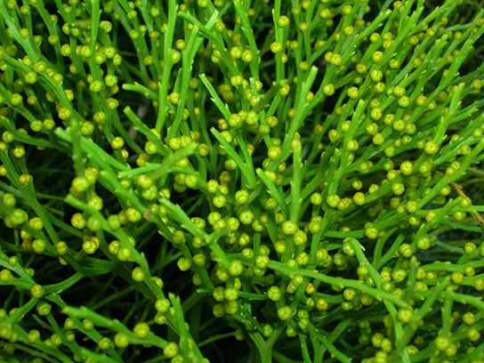
Phylum Monilophyta: Class Polypodiopsida (True Ferns)¶
With their large fronds, the true ferns are perhaps the most readily recognizable seedless vascular plants. They are also considered to be the most advanced seedless vascular plants and display characteristics commonly observed in seed plants. More than 20,000 species of ferns live in environments ranging from the tropics to temperate forests. Although some species survive in dry environments, most ferns are restricted to moist, shaded places. Ferns made their appearance in the fossil record during the Devonian period (420 MYA) and expanded during the Carboniferous (360 to 300 MYA).
The dominant stage of the life cycle of a fern is the sporophyte, which consists of large compound leaves called fronds. Fronds may be either finely divided or broadly lobed. Fronds fulfill a double role; they are photosynthetic organs that also carry reproductive organs. The stem may be buried underground as a rhizome, from which adventitious roots grow to absorb water and nutrients from the soil; or, they may grow above ground as a trunk in tree ferns (Figure 25.21). Adventitious organs are those that grow in unusual places, such as roots growing from the side of a stem.
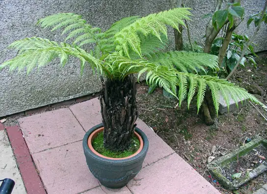
The tip of a developing fern frond is rolled into a crozier, or fiddlehead (Figure 25.22). Fiddleheads unroll as the frond develops.
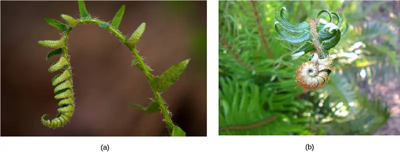
On the underside of each mature fern frond are groups of sporangia called sori (Figure 25.23a). Most ferns are homosporous. Spores are produced by meiosis and are released into the air from the sporangium. Those that land on a suitable substrate germinate and form a heart-shaped gametophyte, or prothallus, which is attached to the ground by thin filamentous rhizoids (Figure 25.23b). Gametophytes produce both antheridia and archegonia. Like the sperm cells of other pterophytes, fern sperm have multiple flagella and must swim to the archegonium, which releases a chemoattractant to guide them. The zygote develops into a fern sporophyte, which emerges from the archegonium of the gametophyte. Maturation of antheridia and archegonia at different times encourages cross-fertilization. The full life cycle of a fern is depicted in Figure 25.24.
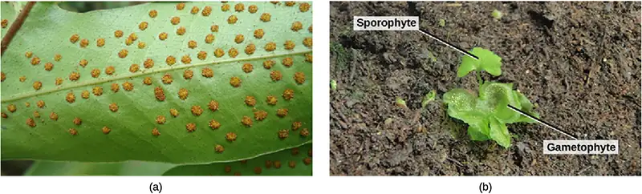
Visual Connection
![The fern life cycle begins with a diploid (2n) sporophyte, which is the fern plant. Sporangia are found on the bottom of the leaves. Sporangia undergo meiosis to form haploid (1n) spores. The spores germinate and grow into a haploid (1n) green gametophyte that resembles lettuce. The gametophyte contains antheridia that produce sperm, and archegonia that produce eggs. Inside the archegonium the sperm fertilizes the egg, forming a diploid (2n) zygote. The zygote undergoes mitosis to form a diploid (2n) sporophyte, ending the cycle.](img/figure-b25-04-06.webp)
Which of the following statements about the fern life cycle is false?
- Sporangia produce haploid spores.
- The sporophyte grows from a gametophyte.
- The sporophyte is diploid and the gametophyte is haploid.
- Sporangia form on the underside of the gametophyte.
Interactive
To see an animation of the life cycle of a fern and to test your knowledge, go to the website.
Career Connection: Landscape Designer
Looking at the ornamental arrangement of flower beds and fountains typical of the grounds of royal castles and historic houses of Europe, it’s clear that the gardens’ creators knew about more than art and design. They were also familiar with the biology of the plants they chose. Landscape design also has strong roots in the United States’ tradition. A prime example of early American classical design is Monticello, Thomas Jefferson’s private estate. Among his many interests, Jefferson maintained a strong passion for botany. Landscape layout can encompass a small private space like a backyard garden, public gathering places such as Central Park in New York City, or an entire city plan like Pierre L’Enfant’s design for Washington, DC.
A landscape designer will plan traditional public spaces—such as botanical gardens, parks, college campuses, gardens, and larger developments—as well as natural areas and private gardens. The restoration of natural places encroached on by human intervention, such as wetlands, also requires the expertise of a landscape designer.
With such an array of necessary skills, a landscape designer’s education should include a solid background in botany, soil science, plant pathology, entomology, and horticulture. Coursework in architecture and design software is also required for the completion of the degree. The successful design of a landscape rests on an extensive knowledge of plant growth requirements such as light and shade, moisture levels, compatibility of different species, and susceptibility to pathogens and pests. Mosses and ferns will thrive in a shaded area, where fountains provide moisture; cacti, on the other hand, would not fare well in that environment. The future growth of individual plants must be taken into account, to avoid crowding and competition for light and nutrients. The appearance of the space over time is also of concern. Shapes, colors, and biology must be balanced for a well-maintained and sustainable green space. Art, architecture, and biology blend in a beautifully designed and implemented landscape (Figure 25.25).
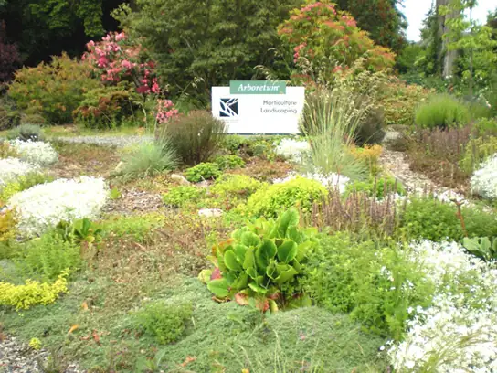
The Importance of Seedless Plants¶
Mosses and liverworts are often the first macroscopic organisms to colonize an area, both in a primary succession—where bare land is settled for the first time by living organisms, or in a secondary succession—where soil remains intact after a catastrophic event wipes out many existing species. Their spores are carried by the wind, birds, or insects. Once mosses and liverworts are established, they provide food and shelter for other plant species. In a hostile environment, like the tundra where the soil is frozen, bryophytes grow well because they do not have roots and can dry and rehydrate quickly once water is again available. Mosses are at the base of the food chain in the tundra biome. Many species—from small herbivorous insects to musk oxen and reindeer—depend on mosses for food. In turn, predators feed on the herbivores, which are the primary consumers. Some reports indicate that bryophytes make the soil more amenable to colonization by other plants. Because they establish symbiotic relationships with nitrogen-fixing cyanobacteria, mosses replenish the soil with nitrogen.
By the end of the nineteenth century, scientists had observed that lichens and mosses were becoming increasingly rare in urban and suburban areas. Because bryophytes have neither a root system for absorption of water and nutrients, nor a cuticular layer that protects them from desiccation, pollutants in rainwater readily penetrate their tissues as they absorb moisture and nutrients through their entire exposed surfaces. Therefore, pollutants dissolved in rainwater penetrate plant tissues readily and have a larger impact on mosses than on other plants. The disappearance of mosses can be considered a biological indicator for the level of pollution in the environment.
Ferns contribute to the environment by promoting the weathering of rock, accelerating the formation of topsoil, and slowing down erosion as rhizomes spread throughout the soil. The water ferns of the genus Azolla harbor nitrogen-fixing cyanobacteria and restore this important nutrient to aquatic habitats.
Seedless plants have historically played a role in human life with uses as tools, fuel, and medicine. For example, dried peat moss, Sphagnum, is commonly used as fuel in some parts of Europe and is considered a renewable resource. Sphagnum bogs (Figure 25.26) are cultivated with cranberry and blueberry bushes. In addition, the ability of Sphagnum to hold moisture makes the moss a common soil conditioner. Even florists use blocks of Sphagnum to maintain moisture for floral arrangements!
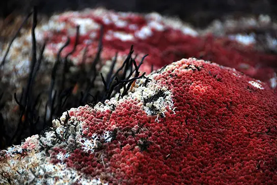
The attractive fronds of ferns make them a favorite ornamental plant. Because they thrive in low light, they are well suited as house plants. More importantly, fiddleheads of bracken fern (Pteridium aquilinum) are a traditional spring food of Native Americans, and are popular as a side dish in French cuisine. The licorice fern, Polypodium glycyrrhiza, is part of the diet of the Pacific Northwest coastal tribes, owing in part to the sweetness of its rhizomes. It has a faint licorice taste and serves as a sweetener. The rhizome also figures in the pharmacopeia of Native Americans for its medicinal properties and is used as a remedy for sore throat.
Interactive
Go to this website to learn how to identify fern species.
By far the greatest impact of seedless vascular plants on human life, however, comes from their extinct progenitors. The tall club mosses, horsetails, and tree-like ferns that flourished in the swampy forests of the Carboniferous period gave rise to large deposits of coal throughout the world. Coal provided an abundant source of energy during the Industrial Revolution, which had tremendous consequences on human societies, including rapid technological progress and growth of large cities, as well as the degradation of the environment. Coal is still a prime source of energy and also a major contributor to global warming.
Chapter Review¶
Key Terms¶
- adventitious
- describes an organ that grows in an unusual place, such as a roots growing from the side of a stem
- antheridium
- male gametangium
- archegonium
- female gametangium
- capsule
- case of the sporangium in mosses
- charophyte
- other term for green algae; considered the closest relative of land plants
- club mosses
- earliest group of seedless vascular plants
- diplontic
- diploid stage is the dominant stage
- embryophyte
- other name for land plant; embryo is protected and nourished by the sporophyte
- extant
- still-living species
- extinct
- no-longer-existing species
- fern
- seedless vascular plant that produces large fronds; the most advanced group of seedless vascular plants
- gametangium
- structure on the gametophyte in which gametes are produced
- gemma
- (plural, gemmae) leaf fragment that spreads for asexual reproduction
- haplodiplodontic
- haploid and diploid stages alternate
- haplontic
- haploid stage is the dominant stage
- heterosporous
- produces two types of spores
- homosporous
- produces one type of spore
- hornworts
- group of non-vascular plants in which stomata appear
- horsetail
- seedless vascular plant characterized by joints
- lignin
- complex polymer impermeable to water
- liverworts
- most primitive group of the non-vascular plants
- lycophyte
- club moss
- megaphyll
- larger leaves with a pattern of branching veins
- megaspore
- female spore
- microphyll
- small size and simple vascular system with a single unbranched vein
- microspore
- male spore
- mosses
- group of bryophytes in which a primitive conductive system appears
- non-vascular plant
- plant that lacks vascular tissue, which is formed of specialized cells for the transport of water and nutrients
- peat moss
- Sphagnum
- peristome
- tissue that surrounds the opening of the capsule and allows periodic release of spores
- phloem
- tissue responsible for transport of sugars, proteins, and other solutes
- protonema
- tangle of single-celled filaments that forms from the haploid spore
- rhizoids
- thin filaments that anchor the plant to the substrate
- seedless vascular plant
- plant that does not produce seeds
- seta
- stalk that supports the capsule in mosses
- sporocyte
- diploid cell that produces spores by meiosis
- sporophyll
- leaf modified structurally to bear sporangia
- sporopollenin
- tough polymer surrounding the spore
- streptophytes
- group that includes green algae and land plants
- strobili
- cone-like structures that contain the sporangia
- tracheophyte
- vascular plant
- vascular plant
- plant containing a network of cells that conducts water and solutes through the organism
- vein
- bundle of vascular tissue made of xylem and phloem
- whisk fern
- seedless vascular plant that lost roots and leaves by reduction
- xylem
- tissue responsible for long-distance transport of water and nutrients
Summary¶
25.1 Early Plant Life¶
Land plants acquired traits that made it possible to colonize land and survive out of the water. All land plants share the following characteristics: alternation of generations, with the haploid plant called a gametophyte, and the diploid plant called a sporophyte; formation of haploid spores in a sporangium; formation of gametes in a gametangium; protection of the embryo; and an apical meristem. Vascular tissues, roots, leaves, cuticle cover, and a tough outer layer that protects the spores contributed to the adaptation of plants to dry land. Land plants appeared about 500 million years ago in the Ordovician period.
25.2 Green Algae: Precursors of Land Plants¶
Charophytes share more traits with land plants than do other algae, according to structural features and DNA analysis. Within the charophytes, the Charales, the Coleochaetales, and the Zygnematales have been each considered as sharing the closest common ancestry with the land plants. Charophytes form sporopollenin and precursors of lignin, phragmoplasts, and have flagellated sperm. They do not exhibit alternation of generations.
25.3 Bryophytes¶
Seedless non-vascular plants are small, having the gametophyte as the dominant stage of the lifecycle. Without a vascular system and roots, they absorb water and nutrients on all their exposed surfaces. Collectively known as bryophytes, the three main groups include the liverworts, the hornworts, and the mosses. Liverworts are the most primitive plants and are closely related to the first land plants. Hornworts developed stomata and possess a single chloroplast per cell. Mosses have simple conductive cells and are attached to the substrate by rhizoids. They colonize harsh habitats and can regain moisture after drying out. The moss sporangium is a complex structure that allows release of spores away from the parent plant.
25.4 Seedless Vascular Plants¶
The seedless vascular plants show several features important to living on land: vascular tissue, roots, and leaves. Vascular systems consist of xylem tissue, which transports water and minerals, and phloem tissue, which transports sugars and proteins. With the development of the vascular system, leaves appeared to act as large photosynthetic organs, and roots to access water from the ground. Small uncomplicated leaves are termed microphylls. Large leaves with vein patterns are termed megaphylls. Modified leaves that bear sporangia are called sporophylls. Some sporophylls are arranged in cone structures called strobili.
The support and conductive properties of vascular tissues have allowed the sporophyte generation of vascular plants to become increasingly dominant. The seedless vascular plants include club mosses, which are the most primitive; whisk ferns, which lost leaves and roots by reductive evolution; and horsetails and ferns. Ferns are the most advanced group of seedless vascular plants. They are distinguished by large leaves called fronds and small sporangia-containing structures called sori, which are found on the underside of the fronds.
Both mosses and ferns play an essential role in the balance of the ecosystems. Mosses are pioneering species that colonize bare or devastated environments and make it possible for succession to occur. They contribute to the enrichment of the soil and provide shelter and nutrients for animals in hostile environments. Mosses are important biological indicators of environmental pollution. Ferns are important for providing natural habitats, as soil stabilizers, and as decorative plants. Both mosses and ferns are part of traditional medical practice. In addition to culinary, medical, and decorative purposes, mosses and ferns can be used as fuels, and ancient seedless plants were important contributors to the fossil fuel deposits that we now use as an energy resource.
Visual Connection Questions¶
25.1 Early Plant Life¶
1. Figure 25.6 Which of the following statements about plant divisions is false?
- Lycophytes and monilophytes are seedless vascular plants.
- All vascular plants produce seeds.
- All non-vascular embryophytes are bryophytes.
- Seed plants include angiosperms and gymnosperms.
Answer
Figure 25.6 B.
25.3 Bryophytes¶
2. Figure 25.14 Which of the following statements about the moss life cycle is false?
- The mature gametophyte is haploid.
- The sporophyte produces haploid spores.
- The calyptra buds to form a mature gametophyte.
- The zygote is housed in the venter.
Answer
Figure 25.14 C.
25.4 Seedless Vascular Plants¶
3. Figure 25.24 Which of the following statements about the fern life cycle is false?
- Sporangia produce haploid spores.
- The sporophyte grows from a gametophyte.
- The sporophyte is diploid and the gametophyte is haploid.
- Sporangia form on the underside of the gametophyte.
Answer
Figure 25.24 D.
Review Questions¶
25.1 Early Plant Life¶
4. The land plants are probably descendants of which of these groups?
- green algae
- red algae
- brown algae
- angiosperms
Answer
A
5. Alternation of generations means that plants produce:
- only haploid multicellular organisms
- only diploid multicellular organisms
- only diploid multicellular organisms with single-celled haploid gametes
- both haploid and diploid multicellular organisms
Answer
D
6. Which of the following traits of land plants allows them to grow in height?
- alternation of generations
- waxy cuticle
- tracheids
- sporopollenin
Answer
C
7. How does a haplontic plant population maintain genetic diversity?
- Zygotes are produced by random fusion.
- Gametes are created through meiosis.
- Diploid spores undergo independent assortment during mitosis.
- The zygote undergoes meiosis to generate a haploid sporophyte.
Answer
A
25.2 Green Algae: Precursors of Land Plants¶
8. What characteristic of Charales would enable them to survive a dry spell?
- sperm with flagella
- phragmoplasts
- sporopollenin
- chlorophyll a
Answer
C
9. Which one of these characteristics is present in land plants and not in Charales?
- alternation of generations
- flagellated sperm
- phragmoplasts
- plasmodesmata
Answer
A
10. A scientist sequences the genome of Chara, red algae, and a tomato plant. What result would support the conclusion that Charophytes should be included in the Plantae kingdom?
- The Chara genome is more similar to the red algae than the tomato plant.
- All three genomes are distinctly different.
- The Chara genome is more similar to the tomato plant genome than the red algae genome.
- The tomato plant genome is distinct from the red algae genome.
Answer
C
11. Which of the following features does not support the inclusion of Charophytes in the Plantae kingdom?
- Charophyte chloroplasts contain chlorophyll a and b.
- Charophyte plant cell walls contain plasmodesmata to allow transfer between cells within multicellular organisms.
- Charophytes do not exhibit growth throughout the entire plant body.
- Charophytes are multicellular organisms that lack vascular tissue.
Answer
D
25.3 Bryophytes¶
12. Which of the following structures is not found in bryophytes?
- a cellulose cell wall
- chloroplast
- sporangium
- root
Answer
D
13. Stomata appear in which group of plants?
- Charales
- liverworts
- hornworts
- mosses
Answer
C
14. The chromosome complement in a moss protonema is:
- 1n
- 2n
- 3n
- varies with the size of the protonema
Answer
A
15. Why do mosses grow well in the Arctic tundra?
- They grow better at cold temperatures.
- They do not require moisture.
- They do not have true roots and can grow on hard surfaces.
- There are no herbivores in the tundra.
Answer
C
16. A botanist travels to an area that has experienced a long, severe drought. While examining the bryophytes in the area, they notice that many are in the same life-cycle stage. Which life-cycle stage should be the most common?
- zygote
- gametophyte
- sporophyte
- archegonium
Answer
B
25.4 Seedless Vascular Plants¶
17. Microphylls are characteristic of which types of plants?
- mosses
- liverworts
- club mosses
- ferns
Answer
C
18. A plant in the understory of a forest displays a segmented stem and slender leaves arranged in a whorl. It is probably a ________.
- club moss
- whisk fern
- fern
- horsetail
Answer
D
19. The following structures are found on the underside of fern leaves and contain sporangia:
- sori
- rhizomes
- megaphylls
- microphylls
Answer
A
20. The dominant organism in fern is the ________.
- sperm
- spore
- gamete
- sporophyte
Answer
D
21. What seedless plant is a renewable source of energy?
- club moss
- horsetail
- sphagnum moss
- fern
Answer
C
22. How do mosses contribute to returning nitrogen to the soil?
- Mosses fix nitrogen from the air.
- Mosses harbor cyanobacteria that fix nitrogen.
- Mosses die and return nitrogen to the soil.
- Mosses decompose rocks and release nitrogen.
Answer
D
23. The production of megaphylls by many different species of plants is an example of _____.
- parallel evolution
- analogy
- divergent evolution
- homology
Answer
A
Critical Thinking Questions¶
25.1 Early Plant Life¶
24. Why did land plants lose some of the accessory pigments present in brown and red algae?
Answer
Sunlight is not filtered by water or other algae on land; therefore, there is no need to collect light at additional wavelengths made available by other pigment coloration.
25. What is the difference between extant and extinct?
Answer
Paleobotanists distinguish between extinct species, which no longer live, and extant species, which are still living.
26. Describe at least two challenges that cactuses had to overcome that cattails did not.
Answer
Possible challenges include:
- Climate: Deserts are more arid than swamps, so there is less humidity in the air and less water in the soil.
- Reproduction: Cactuses are often not densely populated, whereas cattails occur in groups.
- Temperature: During the day, deserts are usually hot, which increases the risk of desiccation. The desert climate will also have broader temperature ranges (extremes).
27. Describe a minimum of two ways that plants changed the land environment to support the emergence of land animals.
Answer
Possible examples:
- Provided a food source
- Increased oxygen concentration in the atmosphere
- Provided shelter/shade from the sun
- Provided a source of water
25.2 Green Algae: Precursors of Land Plants¶
28. To an alga, what is the main advantage of producing drought-resistant structures?
Answer
It allows for survival through periodic droughts and colonization of environments where the supply of water fluctuates.
25.3 Bryophytes¶
29. In areas where it rains often, mosses grow on roofs. How do mosses survive on roofs without soil?
Answer
Mosses absorb water and nutrients carried by the rain and do not need soil because they do not derive much nutrition from the soil.
30. What are the three classes of bryophytes?
Answer
The bryophytes are divided into three phyla: the liverworts or Marchantiophyta, the hornworts or Anthocerotophyta, and the mosses or true Bryophyta.
31. Describe two adaptations that are present in mosses, but not hornworts or liverworts, which reflect steps of evolution toward land plants.
Answer
Potential answers include:
- Mosses exhibit a primitive conductive system in their stalks that transports nutrients and water.
- Mosses exhibit a more complex, multicellular rhizoid system.
32. Bryophytes form a monophyletic group that transitions between green algae and vascular plants. Describe at least one similarity and one difference between bryophyte reproduction and green algae reproduction.
Answer
Similarities include:
- Sexual reproduction is dependent upon water in which the male gamete swims.
- The haploid organism is the dominant part of the life cycle.
Differences include:
- Bryophyte gametotangia protect the gametes and the growing embryo.
- Bryophytes make sporangium to produce spores.
25.4 Seedless Vascular Plants¶
33. How did the development of a vascular system contribute to the increase in size of plants?
Answer
Plants became able to transport water and nutrients and not be limited by rates of diffusion. Vascularization allowed the development of leaves, which increased efficiency of photosynthesis and provided more energy for plant growth.
34. Which plant is considered the most advanced seedless vascular plant and why?
Answer
Ferns are considered the most advanced seedless vascular plants, because they display characteristics commonly observed in seed plants—they form large leaves and branching roots.
35. Ferns are simultaneously involved in promoting rock weathering, while preventing soil erosion. Explain how a single plant can perform both these functions, and how these functions are beneficial to its ecosystem.
Answer
A fern roots into the soil through its rhizome system. As the roots work through the top layer of earth, they might encounter rocks and slowly grow through them. This will break the rock down into smaller pieces (weathering), contributing to the ongoing process of the rock cycle. However, the roots will also now form a network that holds the earth in place, preventing erosion. Many other living plants and animals will benefit from the added habitat (ex. dunes on a shoreline).
Adapted from Biology 2e by OpenStax, licensed under CC BY 4.0. Access the original for free at openstax.org. Changes: converted to the web reading format of The Open Book Project.